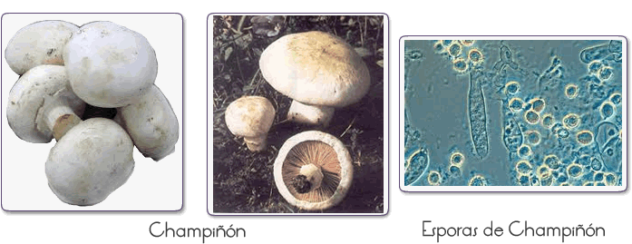
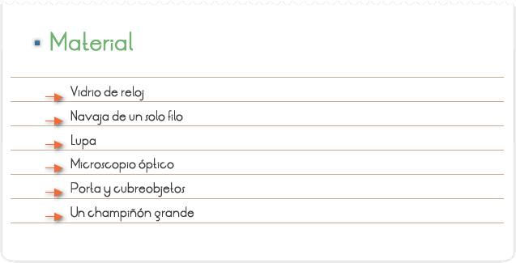
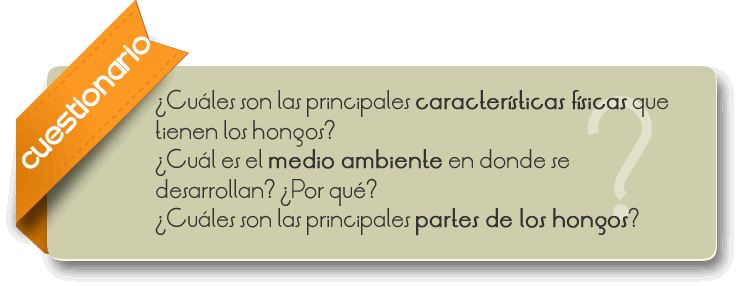

Los hongos, en sentido amplio, son seres eucariotas, normalmente multinucleados, que se reproducen por medio de esporas, móviles o inmóviles, sexuales o asexuales (si deseas conocer más detalles sobre el aspecto de las esporas). Son heterótrofos, sin clorofila, y se alimentan por absorción (raramente por fagocito. El talo (soma o cuerpo vegetativo) puede ser unicelular o típicamente filamentoso (ya se verán algunas excepciones), y está recubierto de una pared de quitina o de celulosa. Los hongos son omnipresentes y cosmopolitas; pueden aparecer prácticamente en cualquier sitio, y alimentarse de lo más insospechado. Casi todos son organismos aerobios, aunque algunas levaduras son anaerobias facultativas, y hay algunos que son fermentadores obligados.

Identificar las principales características de los hongos de acuerdo a las condiciones que le favorecen su supervivencia.

1. Toma el champiñón y colócalo en el vidrio de reloj, con la lupa realiza la observación de cada una de sus partes con mucho detalle, dibuja las partes que apreciaste.
2. Ahora con ayuda de la navaja realiza un corte transversal del sombrero del champiñón colócalo sobre el portaobjetos y agrega una gota de agua, ahora colócale el cubreobjetos y observa tu preparación con el objetivo de menor aumento y dibuja.
3. Toma con una aguja de disección parte de las esporas que se encuentran por debajo del sombrero y colócalas en el portaobjetos que tiene una gota de agua, y después colócale el cubreobjetos y observa con el objetivo de menor y luego con el de mayor aumento. Dibuja lo que observaste en ambos objetivos.
4. Indica ahora cuales son los factores abióticos que permiten que los hongos presenten esas características.

Los hongos no son plantas ni animales, aunque se parezcan en algunas de sus características tanto a las unas como a los otros. A las plantas, por ser organismos sedentarios que se encuentran fijos a un sustrato y, mientras están vivos, no cesan de crecer. A los animales, pues, aunque las células de los hongos poseen pared como las de las plantas, las paredes celulares fúngicas son ricas en quitina, la misma sustancia que hace duro el esqueleto externo de los insectos.
En realidad, los organismos que conocemos como hongos tienen diferentes orígenes en el árbol de la vida, razón por la cual se distribuyen en tres distintos reinos. La mayoría, los más familiares y reconocibles, conforman el reino de los hongos verdaderos (Fungi o Eumycota). Otros se ubican en el mismo reino de las amebas, el llamado Protozoa, como es el caso de los hongos mucilaginosos; y otros más, entre los que se cuentan ciertos mohos acuáticos que parasitan peces, comparten un tercer reino, el denominado Chromista, con las diatomeas, esas particulares algas microscópicas de curiosa simetría.
Se estima que existe más de un millón de especies de hongos en el planeta, pero tan sólo unas 70,000 de ellas han sido descritas por los especialistas, lo cual hace evidente la necesidad de contar con más científicos (micólogos o micetólogos) que estudien estos organismos. Mientras tanto, muchas especies de hongos se han extinguido y otras se encuentran amenazadas en todo el mundo. Esto es particularmente cierto en países tropicales ricos en diversidad biológica como Colombia.
Los hongos tienen distintos hábitos de vida. Los hongos saprófitos, es decir descomponedores de materia orgánica, cumplen una función ecológica de la mayor relevancia pues garantizan el reciclaje de la materia muerta y, por lo tanto, la recirculación de sustancias nutritivas en los ecosistemas.